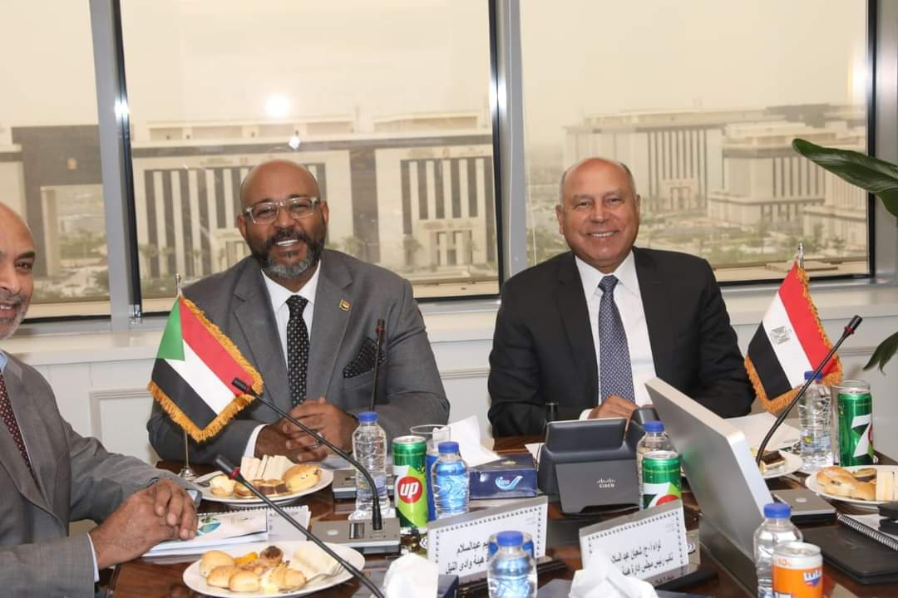

-
 وزيرا النقل المصرى والسودانى يترأسان الاجتماع رقم 181 للجمعية العمومية لهيئة وادى النيل للملاحة النهرى
وزيرا النقل المصرى والسودانى يترأسان الاجتماع رقم 181 للجمعية العمومية لهيئة وادى النيل للملاحة النهرية ويبحثان سبل حل مشكلة تكدس الشاحنات على الحدود المصرية السودانية
-

كلمة الفريق مهندس كامل الوزير وزير النقل خلال المؤتمر الصحفي المنعقد يوم الثلاثاء 31 أكتوبر 2023 للإعلان عن انطلاق فاعليات الدورة الخامسة لمعرض ومؤتمر النقل لإفريقيا والشرق الأوسط TransMEA 2023 5 - 8 نوفمبر 2023
كلمة الفريق مهندس كامل الوزير وزير النقل خلال المؤتمر الصحفي المنعقد يوم الثلاثاء 31 أكتوبر 2023 للإعلان عن انطلاق فاعليات الدورة الخامسة لمعرض ومؤتمر النقل لإفريقيا والشرق الأوسط TransMEA 2023 5 - 8 نوفمبر 2023 والذي يقام تحت رعاية وتشريف فخامة السيد رئيس الجمهورية تحت شعار توطين صناعة وسائل النقل في مصر